Беспилотное судно
Надводная платформа тримаранного типа для экологического мониторинга, отбора проб воды, инспекции сооружений, охраны акваторий и спасательных операций. Судно печатается на 3D-принтере, ходит по маршруту без экипажа и обходится в 58 тысяч рублей.
Как оно устроено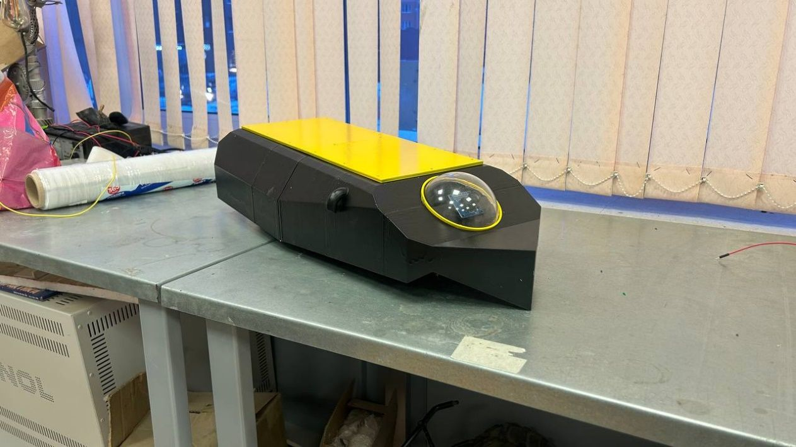
Работа на воде зависит от людей и пилотируемых судов
Экологический мониторинг, отбор проб, охрана биоресурсов, спасательные операции и оценка запасов рыбы выполняются в основном вручную, с борта катеров. Отсюда низкая доказательность данных, высокие расходы и риск для людей.
случаев загрязнения водоёмов фиксируется в год, и это только зарегистрированная часть
тонн химикатов ежегодно попадает в реки и озёра
нарушений правил рыболовства за полугодие 2025 года, штрафы свыше 95 миллионов рублей
Пробы теряют юридическую силу
Координаты и условия отбора фиксируются вручную, с пропусками и ошибками консервации. В судебной практике есть дела, где пробы воды не приняли как доказательство именно из-за отсутствия зафиксированных координат и сведений об используемых приборах. Государство теряет доказательную базу, а предприятия и муниципалитеты платят за переотборы и тяжбы.
Патрулирование и спасение дороги и медленны
При падении человека в холодную воду критическое окно спасения часто ограничено 5–15 минутами, а координация между катерами и береговыми службами затягивается. Одна единица патрульной техники обходится в 15–20 млн рублей без учёта топлива, экипажа и обслуживания. Многоцелевое судно РПК 640 с экипажем из шести человек стоит 18 800 000 рублей, а его техобслуживание обходится в 1 316 000 рублей в год.
Швейцарский нож для работы на воде
Проект объединяет мониторинг, контроль, отбор проб и первичную аналитику в одной модульной платформе. Полезная нагрузка меняется без изменения базовой конструкции.
- Сбор проб воды
- Мониторинг состояния воды
- Инспекция сооружений на воде
- Участие в спасательных операциях
- Охрана водных территорий
- Гидрография
- Инспекция малых судов
- Доставка грузов при наводнениях
- Сбор мусора
- Оценка биоресурсов и научные съёмки
Судно поддерживает три режима: дистанционное управление оператором, полуавтономное выполнение миссии и автономное следование по маршруту с возможностью вмешаться на любом этапе. Основной канал связи сотовый, поэтому судно управляемо из любой точки мира. Целевая аудитория платформы: охранные предприятия, экологические службы, поисково-спасательные отряды и организации, которые следят за гидротехническими сооружениями.
Тримаран, который печатается на 3D-принтере
Корпус
Тримаран с центральной палубой для электроники и полезной нагрузки и двумя полыми боковыми палубами. Такое решение увеличивает полезную площадь и остойчивость без роста габаритов. Детали печатаются из экологичного пластика PLA, соединяются эпоксидным клеем и герметизируются по стандарту IP68.
Движитель
Закрытый водомёт без выступающих вращающихся элементов. Забор воды, разгон и выброс происходят внутри корпуса, поэтому движитель не боится мелководья, водорослей и мусора и не травмирует обитателей водоёма. Поворотное сопло с сервоприводом заменяет рулевое перо: меньше гидродинамического сопротивления и подвижных частей снаружи.
Силовая установка
Бесколлекторный электродвигатель 3180 kV: высокий КПД, точное регулирование оборотов и запас тяги как для медленного маневрирования у точки отбора, так и для устойчивого хода по маршруту.
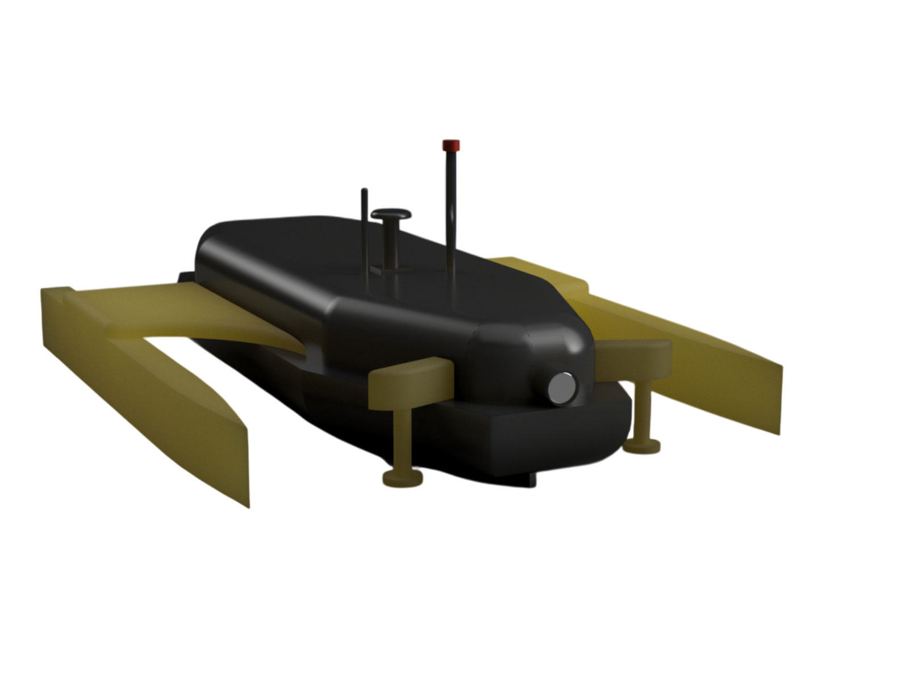
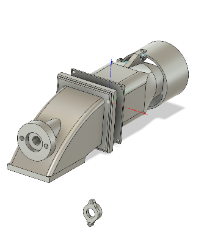
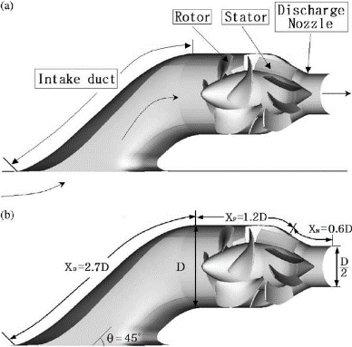
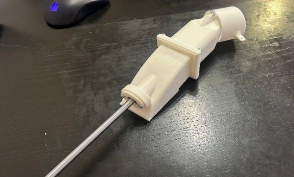
Автоматика и связь
Распределённая архитектура построена на открытом ПО и разделяет навигацию и обработку данных. Проверенные алгоритмы ArduPilot снижают риски при разработке, а открытые лицензии снимают ограничения на модификацию и коммерческое использование.
Контроллер Pixhawk 2.4.8 с прошивкой ArduRover и модулем GPS M8N ведёт судно по маршруту в Mission Planner, удерживает позицию и запускает отбор проб в контрольных точках.
Бортовой компьютер Raspberry Pi под RaspbianOS на базе Debian Trixie логгирует телеметрию, транслирует видео и выводит голос оператора на динамик, чтобы связаться с пострадавшими, например с человеком на дрейфующей льдине. Обмен данными между узлами идёт по протоколу MAVLink.
Через плату Arduino Mega и шину I2C подключаются датчики анализа воды и сменные модули: эхолот, тепловизор, портативная метеостанция, фонарь и грузовой отсек.
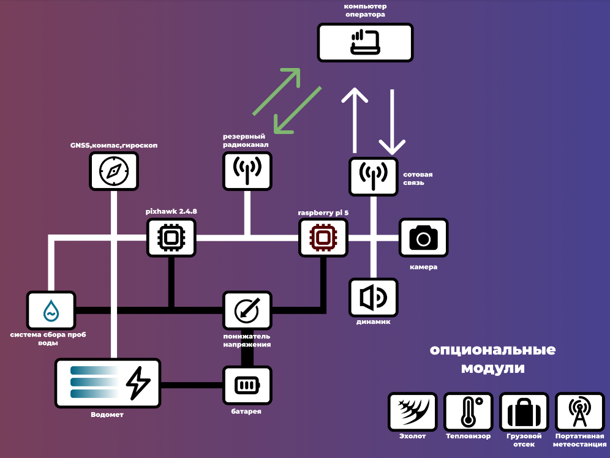
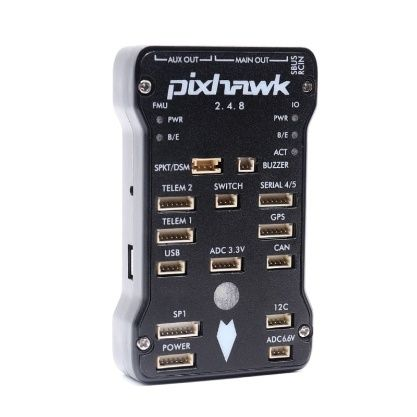
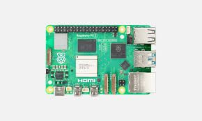
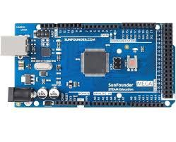
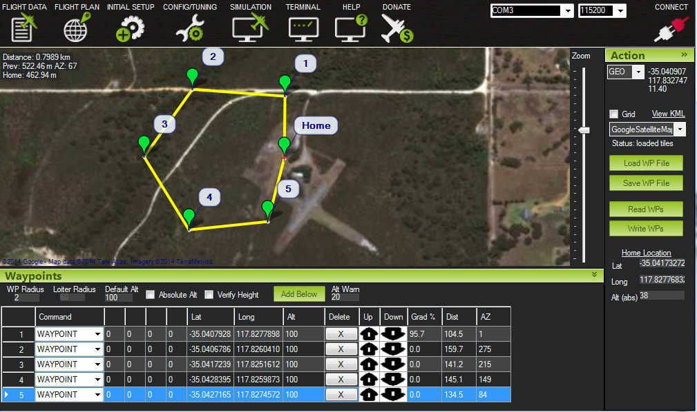
- Основной канал
- сотовая связь LTE через модем SIM7600 внутри защищённой mesh-сети NetBird поверх WireGuard (ChaCha20-Poly1305), с обходом NAT и CG-NAT
- Резервный канал
- радиоканал 433 МГц с уверенной работой на дистанции до 2 км прямой видимости, передаёт базовую телеметрию и команды
- Контур управления
- геймпад оператора и оболочка BoatPult.exe, асинхронный бэкенд FastAPI и mavlink-router, поток команд RC-override с частотой 20 Гц, телеметрия с частотой 10 Гц, три изолированных systemd-сервиса на борту
- Видеопоток
- камера с разрешением 1280×720 и 30 кадрами в секунду, программное кодирование H.264 (ffmpeg, около 25% нагрузки процессора), доставка через mediamtx по WebRTC со сквозной задержкой менее секунды
- Задержка канала
- круговое время прохождения сигнала в сотовой сети около 185 мс
- Отказоустойчивость
- watchdog потери связи 450 мс с подачей нейтральных команд на приводы в течение 3 секунд, монопольный арбитраж оператора, запись всех действий в journald и верификация 901 параметра автопилота по контрольным суммам SHA-256
Отбор проб с достоверным протоколом
В момент отбора судно автоматически фиксирует координаты, дату и время, параметры окружающей среды и идентификаторы применяемых измерительных средств. Результаты измерений остаются воспроизводимыми и пригодными для контролирующих процедур.
Как работает отбор
В системе насос, силиконовая трубка с утяжелителем, катушка с приводом для размотки и герметичная ёмкость. Трубка опускается в водную толщу на заданную глубину, её задаёт длина размотанной части, и вода забирается без изменения положения судна. Проба получается с любой нужной глубины в пределах конструктивных ограничений.
Датчики на борту
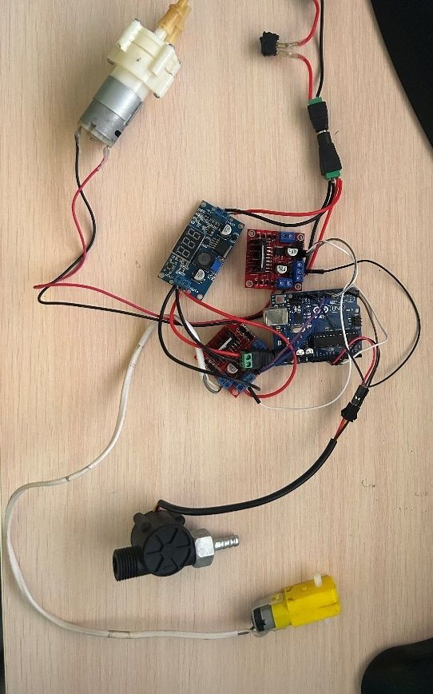
Экономика владения
Полная смета прототипа по компонентам составила 57 180 рублей. Для сравнения в работе приведены катер APACHE 5 и промышленное судно.
| Компонент | Стоимость, ₽ |
|---|---|
| Микроконтроллер Arduino Mega | 1 225 |
| Микрокомпьютер Raspberry Pi 4 | 6 459 |
| Полётный контроллер Pixhawk 2.4.8 | 9 530 |
| Модуль 3G/LTE SIM7600 | 7 625 |
| GPS-модуль M8N | 1 863 |
| Датчик мутности воды | 670 |
| Датчик температуры DS18B20 | 130 |
| Датчик pH | 2 941 |
| Датчик ОВП | 3 970 |
| ESC и моторная группа | 9 405 |
| Хаб I2C для датчиков | 167 |
| Камера для Raspberry Pi | 3 334 |
| Датчик количества растворённых веществ | 1 469 |
| Предохранитель | 188 |
| Распределитель питания (PDB) | 287 |
| Набор соединительных клемм XT60 | 310 |
| Понижающий преобразователь UBEC | 763 |
| Переходник USB-TTL | 1 040 |
| Пластик PLA, жёлтый | 1 040 |
| Пластик PLA, серый | 1 040 |
| Эпоксидный клей | 3 724 |
| Итого | 57 180 |
| Критерий | APACHE 5 | Мой вариант | Промышленное судно |
|---|---|---|---|
| Цена | 2,5 млн ₽ | 58 тыс. ₽ | 19 млн ₽ |
| Автономность | частичная | полная | нет |
| Обслуживание в год | 600 тыс. ₽ | 4 тыс. ₽ | 2,88 млн ₽ |
Обслуживание прототипа сводится к расходникам и стоимости сотовой связи и укладывается в 4 тысячи рублей в год, против 600 тысяч у APACHE 5 и 2,88 миллиона у промышленного судна.
| Критерий | APACHE-5 | АИРА-ФЛОТ | Мой вариант | Беспилотный катер ЛЭТИ |
|---|---|---|---|---|
| Длительность работы | 2 часа | 8 часов | до 6 часов | до 12 часов |
| Максимальная скорость | 18 км/ч | 4 км/ч | 6 км/ч | 40 км/ч |
| Связь и дальность | радиосвязь, 2 км | радиосвязь, 3 км | сотовая связь, в пределах покрытия сети | радиосвязь, дальность не указана |
| Полезная нагрузка | эхолот, камера | система сбора проб воды, датчики анализа воды, видеокамера | система сбора проб воды, датчики анализа воды, видеокамера, громкоговоритель, эхолот, тепловизор, багажный отсек, метеостанция, фонарь | эхолот, камера, датчики анализа качества воды, багажный отсек |
| Функции | гидрография | сбор проб воды, мониторинг её состояния, инспекция сооружений | сбор проб, мониторинг, инспекция сооружений, спасательные операции, охрана, гидрография, инспекция малых судов, доставка грузов, сбор мусора | мониторинг воды, инспекция сооружений, гидрография, доставка грузов |
| Масса | 10 кг | до 20 кг | до 18 кг | не указана |
| Модульность | нет | нет | да | да |
| Контроль при потере связи | автовозврат по инерциальной навигационной системе | не предусмотрен | радиосвязь | не предусмотрен |
| Автономность | полная | частичная* | полная | полная |
| Присутствие на рынке | массовое производство | выпущено всего 2 экземпляра | планируется | экспериментальный образец |
* у АИРА-ФЛОТ управление осуществляется только с помощью оператора на берегу. По итогам сравнения в работе сделан вывод: на рынке пока нет решения, которое закрывает все перечисленные задачи одновременно, поэтому у проекта есть свободная ниша.
От прототипа к изделию
Первый прототип
Минимально жизнеспособный продукт: механизм сбора проб воды, Wi-Fi-камера с беспроводной передачей изображения, датчики температуры и влажности. Конструкция была упрощённой и не претендовала на промышленное применение, но подтвердила работоспособность ключевых решений и показала направления развития.
Текущее изделие
Полный корпус-тримаран из напечатанных деталей, водомётная установка с поворотным соплом, распределённая электроника Pixhawk, Raspberry Pi и Arduino Mega, система отбора проб с датчиками анализа воды. Подтверждена работоспособность дистанционного, полуавтономного и автономного режимов управления.
Дальнейшие планы проекта: опытная эксплуатация совместно с экологическими службами, МЧС и рыбоохранными структурами, затем выход на коммерческий рынок.
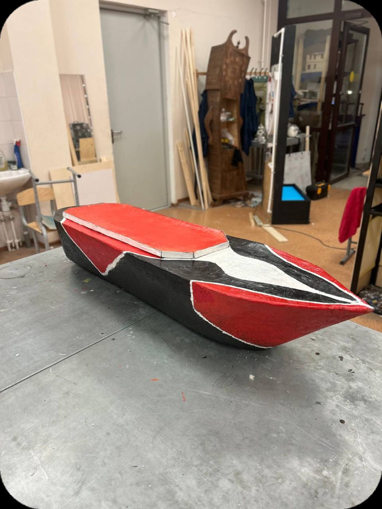
Признание на конкурсах
На «Больших вызовах» работу оценивали представители менеджмента компании «ГЕОСКАН», сотрудники Объединённой авиастроительной корпорации и научные работники Московского энергетического института. Экспертная оценка подтвердила перспективность выбранного направления.